32 Hydroxy compounds
Alcohols, phenol, acidity, electrophilic substitution and ester formation
32 Hydroxy compounds
本章对应 CIE 9701 2025–2027 syllabus 的 32.1 Alcohols (AL) 与 32.2 Phenol。题目部分对应专题题包 7.4 Hydroxy Compounds (A Level Only) 的 Easy、Medium 与 Hard Structured Questions。
Learning objectives
学完本章后，你应该能够：
- explain why acyl chlorides are reactive towards nucleophiles and write esterification equations;
- distinguish phenols from aliphatic alcohols and describe the preparation of phenol from phenylamine;
- write equations for phenol reacting with sodium, sodium hydroxide and acyl chlorides;
- explain why phenol is a weak acid and compare its acidity with water and ethanol;
- describe the activating and 2,4,6-directing effect of the hydroxyl group;
- predict the products and conditions for nitration, bromination and diazonium coupling;
- apply these ideas to substituted phenols, 1-naphthol and short synthesis routes.
32.1 Alcohols (AL)
Acyl chlorides and nucleophilic acyl substitution
An acyl chloride contains the functional group \(\ce{RCOCl}\). The carbonyl carbon is electron-deficient because the \(\ce{C=O}\) bond is polar, so it is susceptible to nucleophilic attack. When an alcohol attacks the carbonyl carbon, chloride is displaced and an ester forms. The reaction is vigorous and steamy white fumes of \(\ce{HCl}\) are produced.
\[\ce{RCOCl + R'OH -> RCOOR' + HCl}\]
Acyl chlorides are more reactive than carboxylic acids: the reaction is rapid and effectively goes to completion, so a high yield of ester can be obtained.
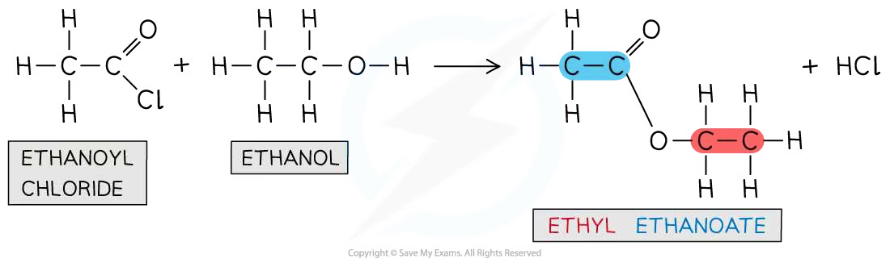
Worked example · Alcohol with an acyl chloride
Completing an esterification equation
Ethanoyl chloride reacts with ethanol. Complete the displayed equation, name the organic product and state one observation.
The alcohol oxygen acts as the nucleophile and attacks the electron-deficient carbonyl carbon.
The \(\ce{C-Cl}\) bond breaks and chloride leaves.
The equation is:
\[\ce{CH3COCl + CH3CH2OH -> CH3COOCH2CH3 + HCl}\]
The organic product is ethyl ethanoate.
Steamy white fumes of hydrogen chloride are observed.
Alcohols and phenols with acyl chlorides
Alcohols react directly and vigorously with acyl chlorides. Phenols are less effective nucleophiles because the oxygen lone pair is partly delocalised into the aromatic ring. For a phenol, heating and a base such as \(\ce{NaOH}\) are required. The base removes the proton from the \(\ce{-OH}\) group to form a phenoxide ion, which is a better nucleophile.
\[\ce{C6H5OH + NaOH -> C6H5O^-Na^+ + H2O}\]
\[\ce{C6H5OH + CH3COCl ->[NaOH,\ heat] CH3COOC6H5 + HCl}\]
The ester formed from phenol and ethanoyl chloride is phenyl ethanoate.
Worked example · Phenyl ester formation
Explaining the role of the base
Phenol reacts with ethanoyl chloride in the presence of sodium hydroxide and heat. Explain why the base is needed and give the name of the organic product.
\(\ce{NaOH}\) deprotonates phenol:
\[\ce{C6H5OH + OH^- -> C6H5O^- + H2O}\]
The phenoxide ion has a negative charge on oxygen and is a better nucleophile than neutral phenol.
It attacks the carbonyl carbon of ethanoyl chloride; chloride is displaced.
The organic product is phenyl ethanoate, \(\ce{CH3COOC6H5}\).
The reaction is nucleophilic substitution at the acyl carbon and produces \(\ce{HCl}\), which is neutralised by the base.
32.2 Phenol
Producing phenol from phenylamine
Phenol is an organic compound in which an \(\ce{-OH}\) group is attached directly to a benzene ring. It can be prepared from phenylamine in three stages.
Stage 1: prepare nitrous acid. Sodium nitrite reacts with dilute hydrochloric acid. Nitrous acid is unstable, so it is prepared freshly and kept below \(10\,^{\circ}\mathrm{C}\) in an ice bath.
\[\ce{NaNO2 + HCl -> HNO2 + NaCl}\]
Stage 2: form benzenediazonium chloride.
\[\ce{C6H5NH2 + HNO2 + HCl -> C6H5N2+Cl^- + 2H2O}\]
Stage 3: hydrolyse the diazonium salt. Warming the unstable diazonium salt with water gives phenol, hydrochloric acid and nitrogen gas:
\[\ce{C6H5N2+Cl^- + H2O ->[warm] C6H5OH + HCl + N2}\]
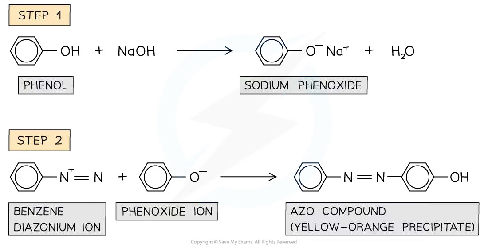
Worked example · Preparation of phenol
Why the temperature is controlled
Phenol is prepared from phenylamine using nitrous acid. State the conditions for forming the diazonium salt and explain why the reaction mixture is kept below \(10\,^{\circ}\mathrm{C}\).
- Use \(\ce{NaNO2}\) and dilute \(\ce{HCl}\) to produce \(\ce{HNO2}\) in situ.
- Keep the mixture in ice at below \(10\,^{\circ}\mathrm{C}\).
- Add phenylamine and dilute hydrochloric acid to form benzenediazonium chloride.
- The diazonium ion is unstable and decomposes at higher temperature. Cooling prevents premature decomposition before the diazonium salt can be used in the next reaction.
- On warming with water, it decomposes to phenol and \(\ce{N2}\).
Phenol as a weak acid
Phenol is only slightly soluble in water, but it dissolves in alkaline solution because it reacts with \(\ce{NaOH}\) to form soluble sodium phenoxide:
\[\ce{C6H5OH + NaOH -> C6H5O^-Na^+ + H2O}\]
It also reacts with sodium metal to form sodium phenoxide and hydrogen gas:
\[\ce{2C6H5OH + 2Na -> 2C6H5O^-Na^+ + H2}\]
Phenol does not react with ethanoic acid because both are weak acids. Phenol is a weak acid because it can donate the hydrogen ion from its \(\ce{-OH}\) group, but ionisation is incomplete:
\[\ce{C6H5OH(aq) <=> C6H5O^-(aq) + H^+(aq)}\]
The conjugate base, the phenoxide ion, is stabilised because the negative charge is delocalised from oxygen into the aromatic \(\ce{\pi}\) system. The lower charge density makes the ion less likely to accept \(\ce{H+}\) again.
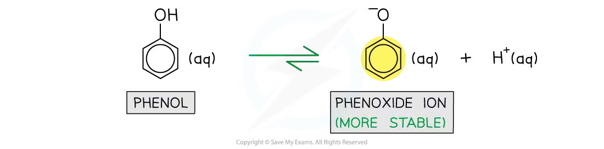
Comparing acidity
At \(25\,^{\circ}\mathrm{C}\), the approximate p\(K_a\) values are:
| Acid | Conjugate base | p\(K_a\) |
|---|---|---|
| Ethanol | Ethoxide ion | 16 |
| Water | Hydroxide ion | 14 |
| Phenol | Phenoxide ion | 10 |
Therefore, acidity increases in the order ethanol < water < phenol. The ethyl group is electron-donating and concentrates negative charge on oxygen in ethoxide, making ethoxide a stronger base. In phenoxide, the charge is spread over the ion by delocalisation.
Worked example · Comparing weak acids
Ethanol, water and phenol
Describe and explain how the acidities of ethanol and phenol compare with that of water.
- Ethanol is less acidic than water.
- The ethyl group is electron-donating and increases the negative charge density on oxygen in the ethoxide ion. Ethoxide therefore attracts \(\ce{H+}\) more strongly.
- Phenol is more acidic than water.
- The negative charge in the phenoxide ion is delocalised over the aromatic ring, so the conjugate base is more stable and less likely to accept \(\ce{H+}\).
- The order is ethanol < water < phenol.
Reactions of the aromatic ring: bromination and nitration
The oxygen lone pair in phenol overlaps with the delocalised \(\ce{\pi}\) system. This donates electron density into the ring, activates it towards electrophiles and directs substitution to the 2, 4 and 6 positions.
Phenol reacts with bromine water at room temperature without a halogen carrier. The orange bromine solution is decolourised and a white precipitate of 2,4,6-tribromophenol forms:
\[\ce{C6H5OH + 3Br2(aq) -> C6H2Br3OH + 3HBr}\]
With dilute nitric acid at room temperature, a mixture of 2-nitrophenol and 4-nitrophenol forms. Concentrated nitric acid gives 2,4,6-trinitrophenol instead.
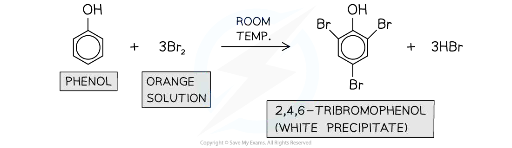
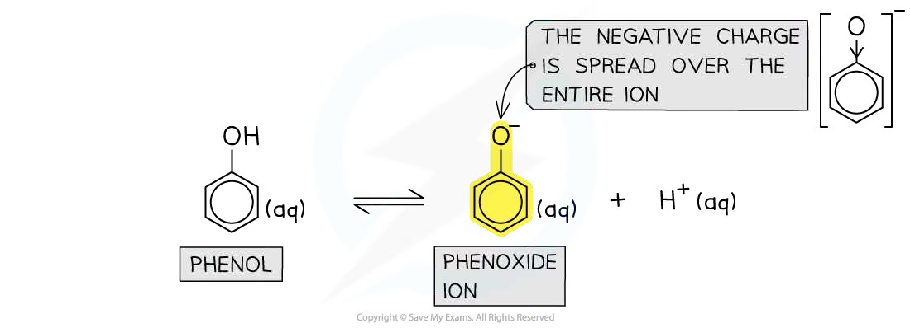
Worked example · Electrophilic substitution of phenol
Choosing conditions and products
Phenol and benzene both undergo bromination. State the conditions for each reaction, explain the difference in reactivity and identify the product from phenol.
- Phenol reacts with bromine water at room temperature and does not require a catalyst. It forms 2,4,6-tribromophenol, a white precipitate.
- Benzene requires pure bromine and anhydrous \(\ce{AlBr3}\) (or another suitable halogen carrier) at room temperature.
- The lone pair on oxygen in phenol is delocalised into the ring, increasing electron density and allowing the ring to polarise \(\ce{Br2}\).
- Benzene has a lower electron density and cannot polarise \(\ce{Br2}\) sufficiently, so a halogen carrier is needed to generate a stronger electrophile.
- The hydroxyl group is 2,4,6-directing, so substitution occurs at those positions.
Diazonium coupling and other phenolic compounds
When phenol is dissolved in sodium hydroxide, sodium phenoxide forms. Cooling this solution and adding a cold diazonium ion produces an azo compound. The two benzene rings are joined by an \(\ce{-N=N-}\) bridge and the product is often a yellow-orange dye or precipitate.
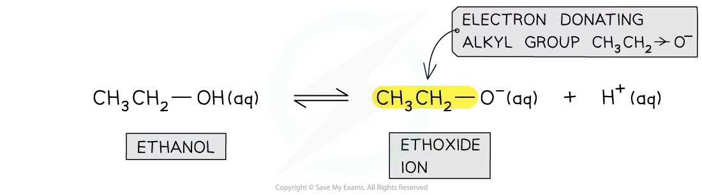
1-Naphthol is a phenolic compound. Its formula is \(\ce{C10H8O}\), and it undergoes similar electrophilic substitution reactions. The hydroxyl group directs electrophiles towards the 2 and 4 positions.
Chapter checklist
Structured questions
7.4 Hydroxy Compounds (A Level Only) - Easy
Example 1 · Reactions of phenol · 7.4 SQ Easy Q1
Phenol, \(\ce{C6H5OH}\), undergoes many different reactions.
Complete the equations in Fig. 1.1 showing all the products of each of these reactions of phenol. If no reaction occurs write no reaction in the products box.


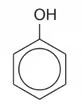

The corresponding reagent labels and product boxes are shown in the extracted figure elements above. [4 marks]
(b) State the reaction mechanism that occurs when phenol reacts with bromine water. [1 mark]
(c) Phenol undergoes bromination when reacted with bromine water. Benzene also undergoes bromination but requires different reaction conditions. State any other necessary conditions for the bromination of phenol and give the necessary reaction conditions for the bromination of benzene. [2 marks]
Show mark scheme / model answer
(a)
- With sodium: \(\ce{2C6H5OH + 2Na -> 2C6H5O^-Na^+ + H2}\) (the unbalanced form showing sodium phenoxide and hydrogen also identifies the products).
- With sodium hydroxide: \(\ce{C6H5OH + NaOH -> C6H5O^-Na^+ + H2O}\).
- With ethanoic acid: no reaction, because both phenol and ethanoic acid are weak acids.
- With bromine water: \(\ce{C6H5OH + 3Br2(aq) -> C6H2Br3OH + 3HBr}\), forming 2,4,6-tribromophenol.
Each correct equation or correct “no reaction”: [1] each.
(b) The mechanism is electrophilic substitution. The oxygen lone pair is delocalised into the aromatic ring, increasing its electron density and making it susceptible to attack by an electrophile. [1]
(c)
- Phenol: room temperature; bromine water is sufficient and no halogen carrier is needed. [1]
- Benzene: pure bromine and an anhydrous halogen carrier such as \(\ce{AlBr3}\) (or \(\ce{FeBr3}\)), usually at room temperature. [1]
Example 2 · Preparation of phenol and ester formation · 7.4 SQ Easy Q2
Phenol can be prepared by the reaction of phenylamine with nitric(III) acid. This reaction involves three steps.
(a) In the first step, nitric(III) acid, \(\ce{HNO2}\), is prepared.
(i) Complete the equation to show the formation of nitric(III) acid:
\[\ce{\rule{2.5cm}{0.15mm} + HCl -> HNO2 + \rule{2.5cm}{0.15mm}}\]
(ii) State the necessary condition for this reaction. [2 marks]
(b) In the second step in the production of phenol, the diazonium salt shown below is formed. In the final step, the diazonium salt is decomposed by warming with water to produce phenol. State the formula of any other products.
[2 marks]
(c) Phenol will react with ethanoyl chloride in the presence of sodium hydroxide and heat. Draw the displayed formula of the organic product and state its name. [2 marks]
Show mark scheme / model answer
(a)
(i)
\[\ce{NaNO2 + HCl -> HNO2 + NaCl}\]
Correct reactants and product \(\ce{NaCl}\): [1].
(ii) Prepare the acid freshly in ice / keep the mixture below \(10\,^{\circ}\mathrm{C}\), because nitric(III) acid is unstable. [1]
(b) The other products are \(\ce{HCl}\) and \(\ce{N2}\):
\[\ce{C6H5N2+Cl^- + H2O ->[warm] C6H5OH + HCl + N2}\]
Formula \(\ce{HCl}\): [1]; formula \(\ce{N2}\): [1].
(c) The organic product is phenyl ethanoate:
\[\ce{C6H5OH + CH3COCl ->[NaOH,\ heat] CH3COOC6H5 + HCl}\]
The displayed structure must show the phenyl group bonded through oxygen to the ethanoyl group; name: phenyl ethanoate. [2]
Example 3 · 1-Naphthol · 7.4 SQ Easy Q3
1-Naphthol is a phenolic compound. Its structure is shown below.
(a) Give the molecular formula of 1-naphthol. [1 mark]
(b) Like phenol, 1-naphthol is a weak acid. Write an equation to show how 1-naphthol acts as a weak acid. [1 mark]
(c) 1-Naphthol undergoes similar reactions to phenol. Suggest the structure of the organic compound that is produced when 1-naphthol reacts with bromine water. [1 mark]
Show mark scheme / model answer
(a) Molecular formula: \(\ce{C10H8O}\). [1]
(b) If \(\ce{ArOH}\) represents 1-naphthol:
\[\ce{C10H8O <=> C10H7O^- + H^+}\]
or, using the structural shorthand for 1-naphthol, \(\ce{C10H7OH <=> C10H7O^- + H^+}\). [1]
(c) Bromine substitutes at the positions activated and directed by the hydroxyl group. The product is a brominated 1-naphthol, with bromine entering the available activated position(s); the structure must show substitution on the aromatic ring and retention of the \(\ce{-OH}\) group. [1]
7.4 Hydroxy Compounds (A Level Only) - Medium
Example 4 · Phenol reactions and directing effects · 7.4 SQ Medium Q1
This question is about the reactions of the aromatic alcohol, phenol. Phenol behaves as a weak acid.
(a)
(i) Write the equation for phenol reacting with sodium hydroxide. [2]
(ii) Write the equation for phenol reacting with sodium metal. [3]
(b) Phenols also undergo electrophilic substitution reactions when reacted with bromine water at room temperature. Describe two observations that can be made during this reaction. [1 mark]
(c) Draw the structures of the two possible products from the reaction of phenol with dilute nitric acid. [2 marks]
(d) Explain why 3-nitrophenol is not formed when phenol reacts with dilute nitric acid. [1 mark]
Show mark scheme / model answer
(a)
(i)
\[\ce{C6H5OH + NaOH -> C6H5O^-Na^+ + H2O}\]
Correct reactants: [1]; correct products: [1].
(ii)
\[\ce{2C6H5OH + 2Na -> 2C6H5O^-Na^+ + H2}\]
Correct reactants: [1]; correct products: [1]; correctly balanced: [1].
(b) The orange bromine water is decolourised and a white precipitate forms. [2]
(c) The two products are 2-nitrophenol and 4-nitrophenol. In each structure, \(\ce{-NO2}\) is at the 2- or 4-position relative to \(\ce{-OH}\).
(d) The \(\ce{-OH}\) group is a 2,4,6-directing group. Its oxygen lone pair donates electron density into the ring, so the incoming electrophile is directed to positions 2, 4 and 6 rather than position 3. [1]
Example 5 · Formula and acidity of phenol · 7.4 SQ Medium Q2
This question is about phenol. Phenol is an aryl compound.
(a)
(i) Give the molecular formula of phenol. [1]
(ii) Give the empirical formula of phenol. [1]
(b) Explain why phenol is a weak acid. You should include an equation in your answer. [3 marks]
(c) Describe and explain how the acidities of ethanol and phenol compare to that of water. [4 marks]
(d) Phenol reacts with bromine water.
(i) Give the name of the product formed by this reaction. [1]
(ii) Write a balanced chemical equation for this reaction. [1]
(e) Explain how the reactions of phenol and benzene with bromine can show that phenol is more reactive than benzene. [3 marks]
Show mark scheme / model answer
(a)
- Molecular formula: \(\ce{C6H6O}\). [1]
- Empirical formula: \(\ce{C6H6O}\), because the molecular formula cannot be simplified. [1]
(b) Phenol can donate the hydrogen ion from its \(\ce{-OH}\) group. The ionisation is incomplete:
\[\ce{C6H5OH <=> C6H5O^- + H^+}\]
The phenoxide ion is stabilised because its negative charge is spread out by delocalisation over the oxygen and aromatic ring. This makes the equilibrium favour ionisation more than it would for an aliphatic alcohol, but it does not make phenol a strong acid. [3]
(c) The order of acidity is:
\[\textbf{ethanol < water < phenol}\]
- Ethanol is less acidic than water because the electron-donating ethyl group concentrates negative charge on oxygen in the ethoxide ion. [2]
- Phenol is more acidic than water because the negative charge in phenoxide is spread out and the conjugate base is more stable. [2]
(d)
Product: 2,4,6-tribromophenol. [1]
Balanced equation:
\[\ce{C6H5OH + 3Br2(aq) -> C6H2Br3OH + 3HBr}\]
[1]
(e) Any three relevant comparisons: benzene requires liquid / pure bromine and an anhydrous halogen carrier such as \(\ce{AlBr3}\), whereas phenol reacts with bromine water without a catalyst; benzene normally monosubstitutes, whereas phenol readily trisubstitutes to form 2,4,6-tribromophenol. These show that phenol reacts more readily with electrophiles. [3]
Example 6 · Phenol preparation and diazonium coupling · 7.4 SQ Medium Q3
Phenol can be prepared from phenylamine. There are three stages:
- Stage 1: prepare nitric(III) acid using sodium nitrite and hydrochloric acid.
- Stage 2: react phenylamine with nitric(III) acid and hydrochloric acid to form a diazonium salt.
- Stage 3: thermally decompose the diazonium salt to form phenol, hydrochloric acid and nitrogen gas.
(a)
(i) Give the essential conditions for the reaction in stage 2. [1]
(ii) Draw the displayed formula of the diazonium salt formed in stage 2. [3]
(b) Write balanced symbol equations for the reactions that occur at each stage. [3 marks]
(c) The diazonium salt formed during stage 2 can also react with phenol to form a useful substance, Z.
(i) Give the displayed formula of Z. [2]
(ii) Suggest a possible use for Z. [1]
(d) The first step of substance Z involves creating the diazonium ion. Explain why the reaction to produce the diazonium ion is carried out at below \(10\,^{\circ}\mathrm{C}\). [1 mark]
Show mark scheme / model answer
(a)
- Keep the reaction mixture below \(10\,^{\circ}\mathrm{C}\), usually in ice. [1]
- The salt is benzenediazonium chloride, \(\ce{C6H5-N#N^+ Cl^-}\). The displayed formula must show the phenyl group, the \(\ce{N#N}\) unit, the positive charge and the chloride ion. [3]
(b)
Stage 1:
\[\ce{NaNO2 + HCl -> HNO2 + NaCl}\]
Stage 2:
\[\ce{C6H5NH2 + HNO2 + HCl -> C6H5N2+Cl^- + 2H2O}\]
An equivalent equation using sodium nitrite directly is:
\[\ce{C6H5NH2 + NaNO2 + 2HCl -> C6H5N2+Cl^- + 2H2O + NaCl}\]
Stage 3:
\[\ce{C6H5N2+Cl^- + H2O ->[warm] C6H5OH + HCl + N2}\]
One correct balanced equation for each stage: [3].
(c) The diazonium ion couples with phenoxide mainly at the para position to the hydroxyl group. Z is an azo compound containing two arene rings joined by \(\ce{-N=N-}\) and a phenolic \(\ce{-OH}\) group. [2] A possible use is as a coloured azo dye. [1]
(d) The diazonium ion is unstable and would decompose at higher temperature, so cooling prevents premature decomposition before coupling. [1]
Example 7 · Rodinol synthesis and reactions · 7.4 SQ Medium Q4
Rodinol is used as a photographic developer. It can be synthesised from phenol by the route shown below.
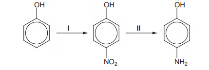
(a)
(i) Suggest reagents and conditions for step I. [1]
(ii) Name the mechanism by which this reaction occurs. [1]
(b)
(i) What type of reaction is step II? [1]
(ii) Give suitable reagents that could be used in step II. [2]
(c) Rodinol can undergo many reactions. Suggest the structural formulae for the compounds E, F and G in the reaction chart.
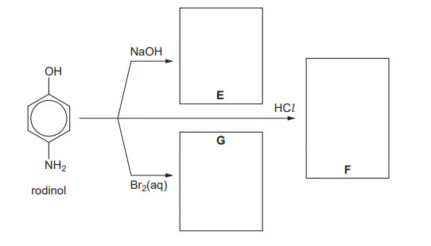
[3 marks]
Show mark scheme / model answer
(a)
- Step I: dilute nitric acid, \(\ce{HNO3(aq)}\), at room temperature. [1]
- Mechanism: electrophilic substitution. [1]
(b)
- Step II is reduction of the nitro group to an amino group. [1]
- Use tin and concentrated hydrochloric acid, \(\ce{Sn/conc. HCl}\), heat under reflux. [2]
(c) Rodinol is 1,3-dihydroxy-4-aminobenzene in the scheme.
- E: the sodium phenoxide salt, \(\ce{H2N-C6H3(OH)(ONa)}\), with the sodium replacing the phenolic hydrogen; water is also formed.
- F: the hydrochloride salt after acidification, \(\ce{[H3N^+-C6H3(OH)2]Cl^-}\), or the equivalent displayed positional structure.
- G: a brominated rodinol. Bromine substitutes on the activated ring, preferentially at positions directed by the two hydroxyl groups; an acceptable major structure is a monobromorodinol such as \(\ce{H2N-C6H2Br(OH)2}\).
Each correct structural formula: [1].
Example 8 · Esters and phenyl benzoate · 7.4 SQ Medium Q5
Acyl chlorides are useful reagents in synthesis. They react with aromatic compounds and also with alcohols.
(a)
(i) Give the reagents and conditions required to make ethyl ethanoate directly from a carboxylic acid. [3]
(ii) Write an equation to show the formation of ethyl ethanoate in part (a)(i). [1]
(b) Phenyl benzoate is made from the reaction between benzoyl chloride and phenol. Its structure is shown below.
What is the molecular formula of phenyl benzoate? [1 mark]
(c)
(i) Give the essential conditions needed for the reaction in part (b). [2]
(ii) Describe one observation you would make in this reaction. [1]
(d) During the initial reaction to produce phenyl benzoate, the phenoxide ion is formed.
(i) Draw the structure of this ion. [1]
(ii) Explain why this ion is formed. [1]
(iii) Write an equation for the overall reaction. [1]
Show mark scheme / model answer
(a)
- Ethanol and ethanoic acid, concentrated sulfuric acid catalyst, heat under reflux. [3]
- \[\ce{CH3COOH + CH3CH2OH <=>[conc. H2SO4][heat] CH3COOCH2CH3 + H2O}\] [1]
(b) Molecular formula: \(\ce{C13H10O2}\). [1]
(c) Use aqueous \(\ce{NaOH}\) and heat / warm conditions. [2] Steamy white fumes of hydrogen chloride may be observed, or formation of the ester product may be noted according to the observation requested. [1]
(d)
- Phenoxide: \(\ce{C6H5O^-}\) (often shown with \(\ce{Na^+}\) as sodium phenoxide). [1]
- It is formed by deprotonation of phenol by the base; the negatively charged phenoxide ion is a better nucleophile and attacks the carbonyl carbon of benzoyl chloride. [1]
- \[\ce{C6H5OH + C6H5COCl ->[NaOH,\ heat] C6H5COOC6H5 + HCl}\] [1]
7.4 Hydroxy Compounds (A Level Only) - Hard
Example 9 · Bromination, nitration and acidity · 7.4 SQ Hard Q1
This question is about the reactions of phenol and benzene.
(a) Explain the difference in bromination of phenol and benzene. In your answer, include structures of any organic products formed in the reaction. [7 marks]
(b) A mixture of 2-nitrophenol and 4-nitrophenol can be formed via the pathway shown below.
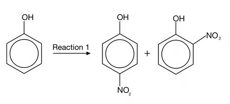
(i) State the reagents required for reaction 1. [1]
(ii) Calculate the mass, in grams, of phenol required to form 30 g of 2-nitrophenol assuming a 35% yield. Give your answer to three significant figures and show your working. [4]
(c) Phenol reacts with sodium to form a salt and hydrogen gas in an acid-base reaction. Explain why phenol behaves as a weak acid. [3 marks]
Show mark scheme / model answer
(a)
- In phenol, an oxygen lone pair is partially delocalised into the benzene ring. [1]
- Benzene has only the delocalised ring \(\pi\) electrons; phenol therefore has a higher electron density in the ring. [1]
- Phenol can polarise the \(\ce{Br-Br}\) bond and generate an electrophile more readily. [1]
- Benzene cannot polarise bromine sufficiently and therefore requires a halogen carrier such as \(\ce{AlBr3}\) or \(\ce{FeBr3}\). [1]
- Phenol reacts with bromine water at room temperature without a catalyst. [1]
- Phenol forms 2,4,6-tribromophenol. [1]
- \[\ce{C6H5OH + 3Br2(aq) -> C6H2Br3OH + 3HBr}\] and the product has bromine at the 2, 4 and 6 positions. [1]
(b)
(i) Use dilute nitric acid at room temperature. [1]
(ii)
The reaction is 1:1 in moles:
\[m_{\text{theoretical}}(\ce{2-nitrophenol})=\frac{30.0}{0.35}=85.714\ \mathrm{g}\]
\[n(\ce{2-nitrophenol})=\frac{85.714}{139.0}=0.617\ \mathrm{mol}\]
Therefore:
\[m(\ce{phenol})=0.617\times 94.0=58.0\ \mathrm{g}\]
Answer: \(58.0\ \mathrm{g}\) to three significant figures. [4]
(c) Phenol can donate \(\ce{H+}\) from the hydroxyl group, forming phenoxide. Oxygen is electronegative and attracts the negative charge, while the negative charge on oxygen attracts \(\ce{H+}\) back. Ionisation is therefore incomplete:
\[\ce{C6H5OH <=> C6H5O^- + H^+}\]
This incomplete ionisation is why phenol is a weak acid. [3]
Example 10 · Phenyl 2-hydroxybenzoate · 7.4 SQ Hard Q2
Phenyl 2-hydroxybenzoate is an antiseptic and is shown below. A molecule of phenyl 2-hydroxybenzoate has 13 carbon atoms.
(a)
(i) State the number of carbon atoms that are \(\ce{sp}\), \(\ce{sp2}\) and \(\ce{sp3}\) hybridised, if any, in phenyl 2-hydroxybenzoate. [1]
(ii) Complete the table showing the reactions of phenyl 2-hydroxybenzoate with the three reagents.
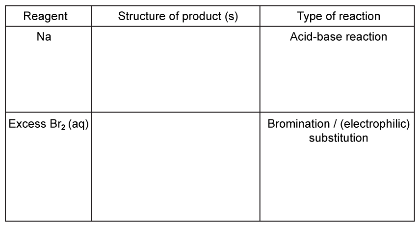
[4 marks]
(b) Phenyl 2-hydroxybenzoate can be made from 2-hydroxybenzoic acid and phenol by heating the two compounds strongly together. Write an equation, using the displayed formula, for this reaction. [2 marks]
(c) Complete and balance the equation for the alkaline hydrolysis of phenyl 2-hydroxybenzoate. [3 marks]
Show mark scheme / model answer
(a)
(i) There are no triple bonds and no saturated carbon atoms:
- \(\ce{sp}\) carbon atoms = 0;
- \(\ce{sp2}\) carbon atoms = 13;
- \(\ce{sp3}\) carbon atoms = 0. [1]
(ii)
- With sodium, the phenolic \(\ce{-OH}\) group reacts in an acid-base reaction to form the sodium phenoxide derivative and hydrogen. [1]
- With excess \(\ce{Br2(aq)}\), bromination occurs by electrophilic substitution on the activated aromatic ring(s); the product structure must show the appropriate brominated phenyl 2-hydroxybenzoate. [1]
- Reaction types: sodium = acid-base; excess bromine water = bromination / electrophilic substitution. [2]
(b) This is esterification between 2-hydroxybenzoic acid and phenol:
\[\ce{2-HOC6H4COOH + C6H5OH ->[heat] 2-HOC6H4COOC6H5 + H2O}\]
The displayed formula must show the carboxyl group converted into an ester linked to phenoxy. [2]
(c) Alkaline hydrolysis gives the carboxylate salt and phenol / phenoxide. A balanced ionic form is:
\[\ce{2-HOC6H4COOC6H5 + 3OH^- -> 2-HOC6H4COO^- + C6H5O^- + 2H2O}\]
The three hydroxide ions neutralise the carboxylic acid group and both phenolic groups in the products; correct products, ionisation and balance: [3].
Example 11 · Salicylic acid and mesalamine synthesis · 7.4 SQ Hard Q3
This question is about a drug called mesalamine, also known as 5-aminosalicylic acid, which is used to treat bowel disease. It can be synthesised from salicylic acid.
(a) State the systematic IUPAC name for salicylic acid and deduce the two positional isomers possible, giving their names and structures. [3 marks]
(b) A possible two-step synthesis of mesalamine is shown below.
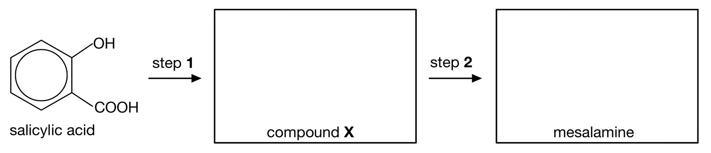
Draw the structures of compound X and mesalamine. [2 marks]
(c) State the reagents and conditions required for steps 1 and 2 in part (b). [5 marks]
Show mark scheme / model answer
(a)
- Salicylic acid: 2-hydroxybenzoic acid. [1]
- The other positional isomers are 3-hydroxybenzoic acid and 4-hydroxybenzoic acid. [2]
In each structure, the carboxylic acid group is carbon 1 and the hydroxyl group is at carbon 3 or 4.
(b)
- Compound X: 2-hydroxy-5-nitrobenzoic acid, with \(\ce{-OH}\) at position 2, \(\ce{-COOH}\) at position 1 and \(\ce{-NO2}\) at position 5.
- Mesalamine: 2-hydroxy-5-aminobenzoic acid, with \(\ce{-OH}\) at position 2, \(\ce{-COOH}\) at position 1 and \(\ce{-NH2}\) at position 5.
(c)
- Step 1 reagent: dilute nitric acid, \(\ce{HNO3(aq)}\). [1]
- Step 1 condition: room temperature. [1]
- Step 2 reagent: \(\ce{Sn/HCl}\) (or an equivalent suitable reducing system). [1]
- Step 2 condition: heat under reflux. [1]
- Add excess aqueous \(\ce{NaOH}\) after reduction to liberate the free amine from its hydrochloride salt. [1]